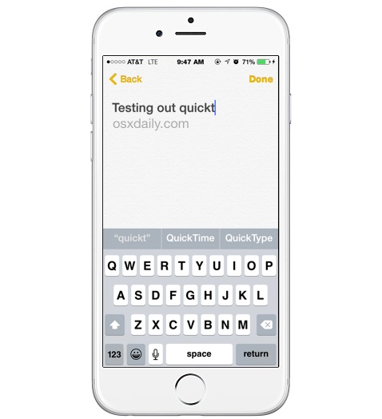
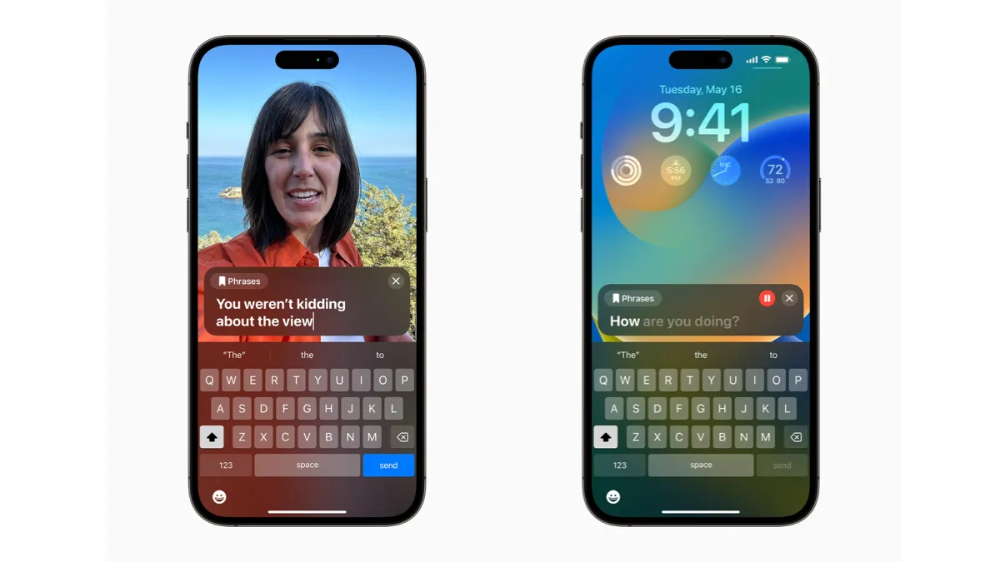
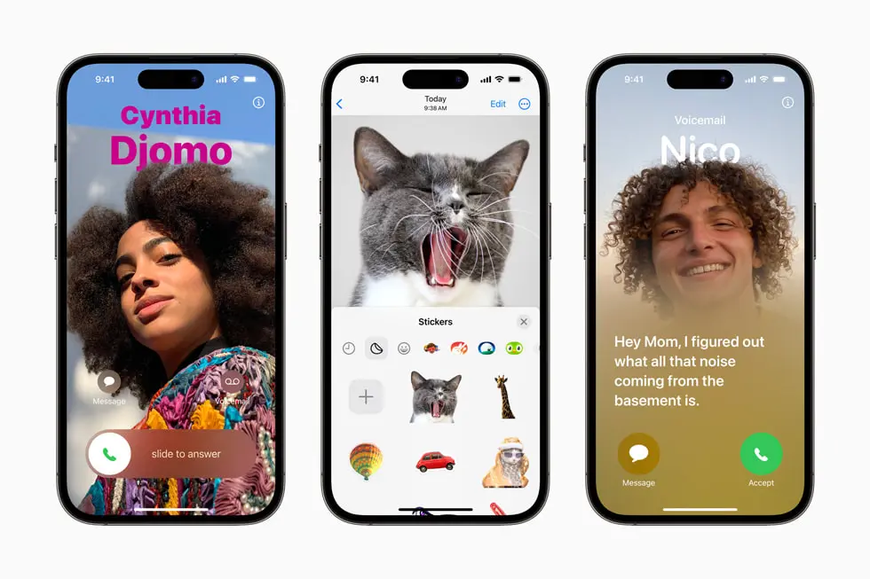
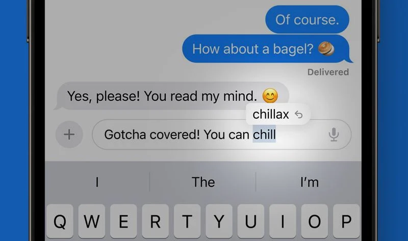
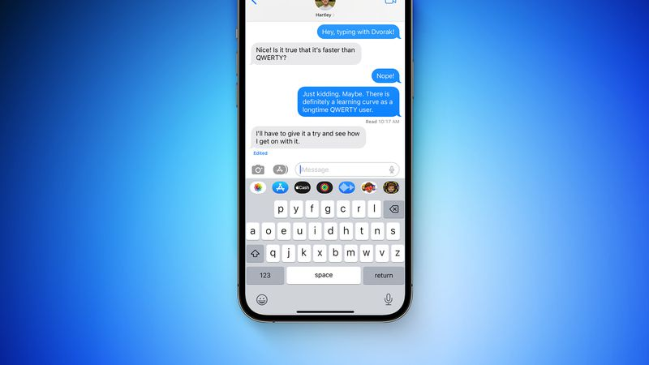

In this blog post, we'll take a look at some of the most exciting new features in iOS 17. We'll also show you how to use these features to make the most of your iPhone.
So whether you're a power user or a casual iPhone owner, read on to learn more about what iOS 17 has to offer.
Here are some of the most exciting new features in iOS 17:
Standby mode: Standby mode is a new feature in iOS 17 that puts your iPhone into a low-power state when it's not in use. In Standby mode, your iPhone will still show the time, date, and notifications, but it will not be actively running apps or services. This can help to extend your iPhone's battery life.
To use Standby mode, simply place your iPhone on a MagSafe or Qi-based wireless charger, or a Lightning charger. Your iPhone will automatically enter Standby mode after 15 minutes of inactivity. You can also manually enter Standby mode by triple-clicking the side button.
When your iPhone is in Standby mode, you can still see the time, date, and notifications. You can also interact with your iPhone by swiping up from the bottom of the screen to see your widgets. If you receive a notification, you can tap on it to view it or reply to it.
Live transcription: Live transcription is a new feature in iOS 17 that uses artificial intelligence to transcribe audio into text in real time. This can be helpful for taking notes, following along in meetings, or understanding lectures.
To use Live transcription, simply open the Control Center and tap on the Live transcription button. Then, start speaking and the audio will be transcribed into text on the screen. You can also use Live transcription in the Phone app, FaceTime, and other apps that support it.
Live transcription is available in a variety of languages, including English, French, Spanish, German, and Chinese. The accuracy of Live transcription may vary depending on the language and the quality of the audio.
Here are some of the things you can do with Live transcription:- notes: If you're in a meeting or a lecture, you can use Live transcription to take notes without having to worry about missing anything.
- Follow along: If you're watching a video or listening to a podcast, you can use Live transcription to follow along without having to rewind or pause.
- Understand lectures: If you're in a class or a training session, you can use Live transcription to understand what the speaker is saying.
- Communicate with people who are deaf or hard of hearing: If you're communicating with someone who is deaf or hard of hearing, you can use Live transcription to help them understand what you're saying.
Live transcription is a great way to make your iPhone more accessible and to help you stay productive. If you're looking for a way to transcribe audio into text in real time, Live transcription is a great option.
Here are some additional details about Live transcription:- Live transcription is enabled by default, but you can disable it in the Settings app.
- You can adjust the settings for Live transcription, such as the font size and the color of the text.
- You can also share the transcription with others by copying it to the clipboard or by sending it in a message.
New stickers: iOS 17 comes with a number of new stickers, including Live Stickers, Memoji stickers, and emoji stickers. You can use these stickers to personalize your messages and make them more fun.
- New Memoji stickers: iOS 17 introduces three new Memoji stickers: halo, smirk, and peekaboo. These stickers can be used to add a touch of personality to your messages.
- Animated stickers: You can now create your own animated stickers by using the remove subject from background tool that Apple added for images in iOS 16. Simply select a subject in an image, and then Apple will create a sticker that animates the subject.
- Emoji stickers: All emoji are now considered stickers and can be used in the Messages app like stickers. This means that you can now send emoji as stickers, or you can use them to create your own custom stickers.
In addition to these new stickers, iOS 17 also introduces a number of new features for stickers, including:
- The ability to add effects to stickers: You can now add a variety of effects to stickers, including cartoon, white outline, 3D puffy, and holographic.
- The ability to resize stickers: You can now resize stickers to fit your message perfectly.
- The ability to rotate stickers: You can now rotate stickers to any angle.
These new stickers and features make it even more fun and expressive to use the Messages app.
Here are some examples of how you can use the new stickers in iOS 17:
- You can use the new Memoji stickers to show your personality and express your emotions. For example, you could use the halo sticker to show that you're feeling happy, the smirk sticker to show that you're feeling playful, or the peekaboo sticker to show that you're feeling mischievous.
- You can use the animated stickers to add movement and fun to your messages. For example, you could use the animated sticker of a cat chasing a mouse to make your friend laugh, or the animated sticker of a fish swimming to add a touch of whimsy to your conversation.
- You can use the emoji stickers to add a touch of humor or creativity to your messages. For example, you could use the emoji sticker of a laughing face to show that you're amused, or the emoji sticker of a heart to show that you care.
- You can use the effects, resizing, and rotation features to make your stickers even more expressive. For example, you could use the cartoon effect to make your stickers look like they're drawn in a comic book, the white outline effect to make your stickers stand out, or the 3D puffy effect to make your stickers look like they're popping out of the screen.
The new stickers and features in iOS 17 make it even more fun and expressive to use the Messages app. So get creative and start using your stickers to show your personality and connect with your friends and family in new ways.
Improved keyboard: The keyboard in iOS 17 has been improved with new features like haptic feedback and predictive text. This makes it easier to type quickly and accurately. More privacy features: iOS 17 includes a number of new privacy features, such as App Privacy Report and Mail Privacy Protection. These features help you to control how your data is used by apps and websites.
- QuickType: QuickType is a new feature that suggests words as you type. It uses on-device machine learning to learn your typing habits and word choices, so it can get better at predicting what you want to say over time. 
- Live Text: Live Text is a new feature that lets you copy and paste text from images. Simply tap and hold on a word in an image and the keyboard will display the text in a box. You can then copy and paste the text into another app. Live Text feature in iOS 17 keyboard 
- Stickers as Emoji: Emoji and stickers are now merged into a single keyboard, so you can easily switch between them. This makes it even easier to add a touch of personality to your messages. 
- Improved autocorrect: Autocorrect has been improved to be more accurate and less annoying. It's now less likely to correct words that you actually meant to type, and it's more likely to correct typos. 
- New keyboard layouts: iOS 17 adds new keyboard layouts for a number of different languages, including Hindi, Bengali, and Thai. 